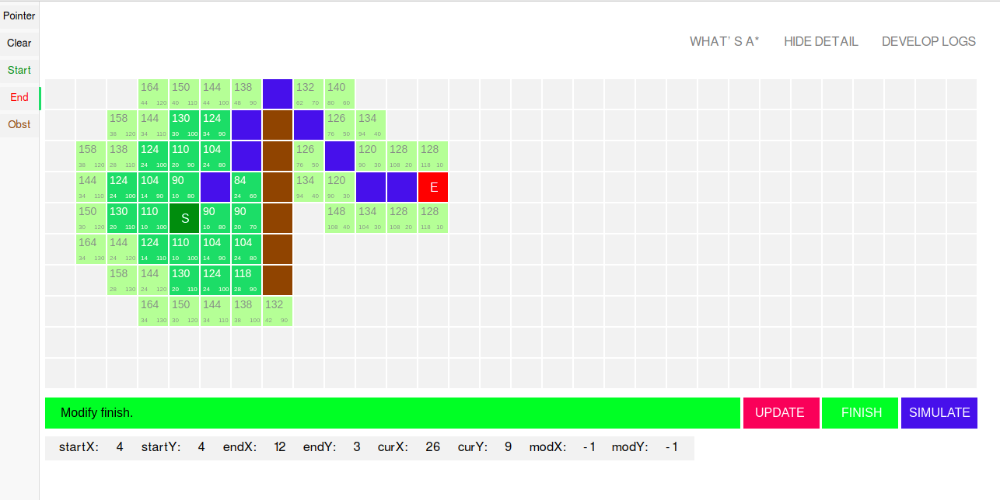
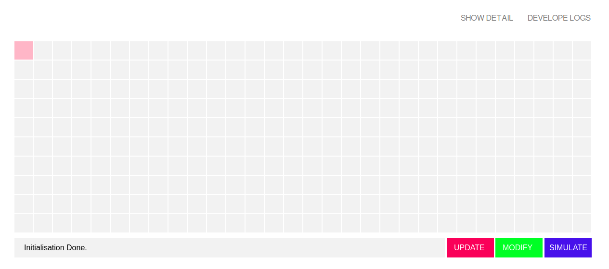

Update Logs
2018-08-27
- Finish the A* Algorithm in the modify mode.
- Update the operational logic to make it place blocks easier.
- Finish the drawRoutine function.
- Add the toolbar function, so now you can draw block easier.
- In modify mode, add information box which shows the detail information of every single block.

2018-08-27
- Simply finish the A* introduction page.
- Define the basic unit of the colse table and open table.
- Add new block type-obstacle, so now we can set obstacle to test how A* algorithm works in real situation.
2018-08-15
- Modify the interface so it can look better. Now it looks like this.

2018-08-14
- Further improve the interface, adding modify function.
- Further improve the tip function, so now it can be smarter to give you useful response.
- Finish to use setInterval() function and clearInterval() funtion to make the map change automatically.
- Optimize code logic, reorganise the Vertex function which can make it easier to organise single vertex.
- Expanding blocks to 6 kinds which include custom block, selected block, start block, end block, inside block and outside block.
- Fix some basic bugs, which can make the program works better.
- Simply finish part of the A star algorithm calculation function, but it does not work well so it should be improved later.
- Finish the simplest kind of search destination algorithm, just a toy since it can no identify obstacles.